ART
ARTIST NAME
ALBUM NAME
LINK
A-One
TOHO EUROBEAT VOL.1
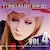
A-One
TOHO EUROBEAT VOL.4
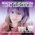
A-One
TOHO EUROBEAT VOL.9
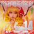
A-One
TOHO EUROBEAT VOL.14
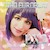
A-One
TOHO EUROBEAT EX2 ~GOD SONGS GOD SINGS~
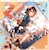
ShinraBansho
The Happy Egoist
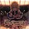
ShinraBansho
Netaminity
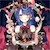
ShinraBansho
U r my nightmare
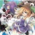
Liz Triangle
B2
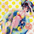
Liz Triangle
Summer Cold
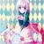
Liz Triangle
Poker Facer
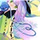
Liz Triangle
Shinso Diver
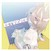
Liz Triangle
RETURNER
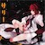
Sally
Taiko Drumstick
Sally
Less
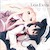
Sally
LessExtra
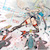
Touhou Jihen
Pleasure Virgin
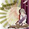
Touhou Jihen
Peerless Patrolwoman
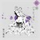
Touhou Jihen
Boundary Paradox
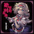
Touhou Jihen
Desperate Concerto
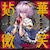
Touhou Jihen
Flower Sermon
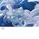
Touhou Jihen
Hommage
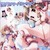
Innocent Key
Touhou Summer Vacation
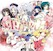
Innocent Key
Touhou Celeb
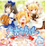
Innocent Key
Touhou School
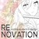
minimum electric design
RENOVATION
MN-logic24
Petit Kami Romantica
MN-logic24
Saku Love Communication
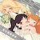
IOSYS
Touhou Gathering Green Wine Drukenness
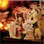
IOSYS
Touhou Splendid Divine Festival
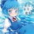
IOSYS
Touhou Anthology of Ice and Snow
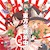
IOSYS
Touhou All Year Round
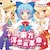
IOSYS
Touhou Wonder Revolution
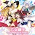
IOSYS
Japanese Maiden Orchestra COLORFUL GIRLS
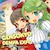
IOSYS
GENSOKYO DEMPA EXPO
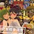
IOSYS
Touhou Gokuraku Yukai
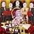
IOSYS
Touhou Golden Time
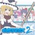
IOSYS
Five-Inch Remix Two
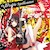
IOSYS
Touhou Variable Spellcaster
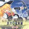
BUTAOTOME
Touhou Carousel
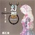
BUTAOTOME
Illusionary Homo Ludens
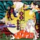
BUTAOTOME
Twilight Elegy
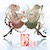
BUTAOTOME
Bonds
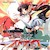
COOL&CREATE
Touhou Strike
COOL&CREATE
Drizzly Train
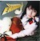
COOL&CREATE
Flowering ERINNNNNN!!
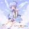
TAMAONSEN
Chill★Now
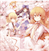
TAMAONSEN
Peach-colored Distance
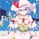
TAMAONSEN
Elysion
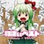
Halozy
Best of Monosugoi
Silver Forest
GRAZE
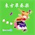
Silver Forest
Touhou Collective Performance
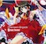
Silver Forest
Phantasm Brigade
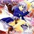
Silver Forest
Touhou Blue Sky Songs
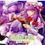
Silver Forest
Rebirth
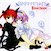
Silver Forest
Sacred Girl's Sacrifice
Silver Forest
Touhou Starry-Eyed
Silver Forest
The Whole World
Silver Forest
Reversal Process
Hachimitsu-Lemon
Late Night Beat DX
Hachimitsu-Lemon
Late Night Beat 5
Hachimitsu-Lemon
Late Night Beat 8
Hatsunetsumiko's
Foreign Sound
Hatsunetsumiko's
Unchained Melody
Hatsunetsumiko's
Lunar Concerto
Hatsunetsumiko's
REUNION
Hatsunetsumiko's
Love, Smile & Blood
diao ye zong
廻 -Meguri-
diao ye zong
辿／誘 -Tadori/Izanai-
diao ye zong
改 -Aratame-
diao ye zong
望 -Nozomi-
diao ye zong
逆 -Asakasa-
diao ye zong
彁 - -
Girls Logic Observatory
Chillout Winter -Four Seasons Library vol.4-
Girls Logic Observatory
Touhou Hyper Grooving Jazz Music Vol.1
Girls Logic Observatory
Showcase II
Fuling Cat Mark
Amber Artemis
Fuling Cat Mark
Stray Cat Girl
LINK
(todo)
(todo)
Sekkenya
Touhou Improper Restriction ~the maximum moving about!~
Sekkenya
Sekkenya's year end present 3
Sekkenya
Touhou Lv.20
Sekkenya
Touhou TOO MUCH
Sekkenya
Touhou CrossHeart
Sekkenya
Eiya-teido (2nd newest album)
Zekkenya
Killer Decoration
Zekkenya
Rare Tracks & Bones
Zekkenya
Brilliant & Precious
Zekkenya
Zekken Best+ 2007-2024
komsoya & Zekkenya
Electronic String Performance -
komsoya & Zekkenya
Electronic String Performance -Spectre Spectrum-
komsoya
TOUHOU DTM -Decade Toho Music-
komsoya
FRIENDS OF MOON -80's Synth Sounds-
Tokyo Active NEETs
Touhou Explosive Jazz 12 Hari
Tokyo Active NEETs
Touhou Explosive Jazz 2 Rebuild
Tokyo Active NEETs
Touhou Explosive Jazz 3 Rebuild
Twitter Tohobu
Birth of Twitter Tohobu:Early Arranges
xi-on
Eyes
xi-on
GROOVY MOON
xi-on
FORTUNE LINE
Machikado-Mapoze
Touhou Recorder Rearrangement ①
Machikado-Mapoze
Together
Machikado-Mapoze
The Gensokyo Quintet
Machikado-Mapoze
Tengu Revolution
Machikado-Mapoze
Dancing Phantasmagoria
Machikado-Mapoze
Where shall we go dancing?
YushiNoKi
2x4

YushiNoKi
Colorful Encounter

Kurage seek room
Playback For You

Kurage seek room
primal

Kurage seek room
Goldenrod Sigma
Kurage seek room, Shonen vivid, moja stick
eureka

Seventh Heaven Maxion
Former Frontier 4th luxuriant

Seventh Heaven Maxion
Dream Aeternus
TaNaBaTa
Star Ocean
TaNaBaTa
Acoustic Time
TaNaBaTa
KILLER TUNES
NJK Record
Crimson Glory Remixes +
NJK Record
TOHO EURO FLASH Vol.1
NJK Record
TOHO EURO FLASH Vol.2

<echo> PROJECT
rosée
Kimino Musuem
palette ~The Gensokyo the People Loved~
efs(?)
Joker &
riverside
Touhou Purple
ESQUARIA
Shining Master
ESQUARIA
PSYCHIC DREAMER
Cajiva's Gadget Shop
ICONOCLASM
TUMENECO
The Secret Binder
AbsoЯute Zero
Encounter at a Mistaken Path
SOUND HOLIC
風 -KAZE-
SOUND HOLIC
妖 -AYAKASHI-
SOUND HOLIC
永 -TOKOSHIE-
SOUND HOLIC
紅 -KURENAI-
SOUND HOLIC
花 -HANA-
SOUND HOLIC
文 -BUN-
SOUND HOLIC
夢 -YUME-
SOUND HOLIC
妖夢 -YOUMU-
SOUND HOLIC
十六夜 -IZAYOI-
SOUND HOLIC
Scarlet Shooter
SOUND HOLIC
Space Jumper
SOUND HOLIC
EUROBEAT HOLIC
SOUND HOLIC
Fantasy★A La Mode
SOUND HOLIC
SOUND HOLIC MEETS TOHO ～東方的紅蓮烈火弾～
SWING HOLIC
VOL.08
SWING HOLIC
VOL.09
SWING HOLIC
VOL.10
SWING HOLIC
VOL.11
SWING HOLIC
VOL.12
SWING HOLIC
VOL.13
SWING HOLIC
VOL.14
SWING HOLIC
VOL.15
SWING HOLIC
VOL.16
Rynth
Touhou Scramble!
CYTOKINE
Bifuracation (Not supported by the intel Xeon, hehe)
ZYTOKINE
gold*
ZYTOKINE
> > > >
ZYTOKINE
SUITS
ZYTOKINE
CRYMEARIVER
Sorairo Sakusen
AMP
Sorairo Sakusen
MariPatche Demo CD
Sorairo Sakusen
Pastel Star
Cakebox
BEST POSITION
Kishida Kyoudan & The Akeboshi Rockets
Fantasy Incident
Kishida Kyoudan & The Akeboshi Rockets
Electric Blue
Kishida Kyoudan & The Akeboshi Rockets
.JP
Kishida Kyoudan & The Akeboshi Rockets
Compact Disc
Kishida Kyoudan & The Akeboshi Rockets
Yukkuri
ShibayanRecords
Miracle☆Impulse ~ emotional feedback
ShibayanRecords
TOHO BOSSA NOVA 2
ShibayanRecords
disco metric
ShibayanRecords
Adrastea